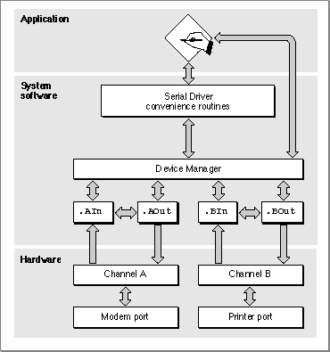

About the Serial Driver
The Serial Driver is a part of the Macintosh Operating System that provides low-level support for asynchronous, interrupt-driven serial data transfers through the modem and printer ports.The Serial Driver provides routines that allow you to
You access the Serial Driver routines using standard Device Manager functions such as open, close, read, write, control, and status. The Serial Driver also includes some convenience routines that you can call from Pascal or C.
- initialize and terminate communication
- transmit and receive data
- examine and change communication settings
The Serial Driver supports the following communication settings
The Serial Driver default settings are 9600 baud, 8 data bits per character, no parity, and 2 stop bits. Hardware handshaking is the default under System 7, although some earlier versions of the Serial Driver defaulted to software handshaking.
- 5, 6, 7, or 8 data bits per character
- odd, even, or no parity
- 1, 1.5, or 2 stop bits
- 300 to 57600 baud transmission rates (depending on hardware capability)
- hardware or software flow control
Additional control and status functions allow you to
- determine the version number of the Serial Driver
- change the input buffer from the default buffer to one that you specify
- obtain information about transmission errors such as overrun, framing, parity, and break signals.
- enable the automatic replacement of characters that have parity errors
- use an external timing signal for synchronous clocking
Macintosh Serial Architecture
The Serial Driver consists of a set of four Macintosh device drivers and assorted convenience routines that interface to the Device Manager. Within the overall Macintosh software architecture, the location and boundaries of the Serial Driver are not sharply defined. This is because its role as mediator between applications and devices is supplemented by routines belonging to the Device Manager.Although the hardware architecture of the serial ports varies, the Serial Driver provides a universal interface for applications. For example, some Macintosh computers use the Zilog Z8530 Serial Communications Controller (SCC) microchip, while others use custom devices. By using the Serial Driver rather than relying on a particular hardware configuration, your application is compatible with all Macintosh computers.
Figure 7-2 shows the Serial Driver and its relation to the Macintosh serial architecture. Conceptually, there are three functional layers: the application layer, the system software layer, and the hardware layer. The Serial Driver, the Device Manager, and the four serial device drivers all exist within the system software layer. Although you normally access the Serial Driver through Device Manager routines, the Serial Driver interface includes a set of convenience routines such as
SerStatusthat provide a high-level interface to some functions.Figure 7-2 The role of the Serial Driver[Missing image]

The four device drivers that control the serial ports differ from other Macintosh device drivers in that they share common internal routines and data structures, as illustrated by the horizontal interconnecting arrows in Figure 7-2. Each driver is associated with a communication channel, either Channel A or Channel B, and each channel is associated with a serial port. Channel A controls the modem port, and Channel B controls the printer port. Each channel has both an input driver and an output driver associated with it. The drivers for the modem port are named .
AInand .AOut, and those for the printer port are named .BInand .BOut.Each input driver receives data from a serial port and transfers it to the application. Each output driver takes data from the application and sends it out its serial port. Although the input and output drivers for a port are closely related and share some of the same routines, each driver has its own device control entry data structure. This means that read and write operations can be processed simultaneously, which allows the Serial Driver to support full-duplex communication.
Because the input and output drivers are not completely distinct entities, some functions (for example, the
SerResetfunction) only need to be invoked on the output driver--the desired operation occurs on the input side as well. Note, however, that you must always explicitly open and close both the input and output drivers.Serial Communication Errors
Data received from the serial port passes through a hardware buffer and then into a software buffer managed by the input driver for the port. Characters are removed from the input driver's buffer each time an application calls the driver's read routine. Each input driver's buffer can initially hold up to 64 characters, but you can specify a larger buffer using theSerSetBuffunction. You need to increase the input buffer size if the buffer fills up faster than your application can read from it, as indicated by overrun errors and lost data.Because the serial hardware in some Macintosh computers relies on processor interrupts during I/O operations, overrun errors are possible if interrupts are disabled while data is being received at the serial port. To prevent such errors, the Disk Driver and other system software components are designed to store any data received by the modem port while they have interrupts disabled, and then pass this data to the port's input driver. Because the system software only monitors the modem port, the printer port is not recommended for two-way communication at data rates above 300 baud.
You can use the
- Note
- AppleTalk is not subject to the same limitations because it is not interrupt-driven and does not use the Serial Driver.
SerStatusfunction to detect the most common serial communication errors:Overrun, parity, and framing errors are usually handled by requesting that the sender retransmit the affected data. Break errors are typically initiated by the user and handled as appropriate for the particular application. When an input driver receives a break signal, it terminates any pending read requests. You can terminate pending write requests by sending a
- Hardware overrun errors occur when the serial hardware input buffer overflows, usually because the input driver doesn't read it often enough.
- Software overrun errors occur when an input driver's buffer overflows, usually because the application doesn't issue read calls to the driver often enough.
- Parity errors occur when the serial hardware detects an incorrect parity bit.
- Framing errors occur when the serial hardware detects an error in the stop bits.
- Break errors occur when a break signal is received.
KillIOrequest to the output driver.